1997 MOLSON INDY VANCOUVER

INDY-CART Vancouver GP
(1997 AUG.29〜31)
【 CARTを楽しむ】今回のカナダ行きのメインはCARTの観戦でした。バンクーバーGPは4回目になります。 今年も予選から決勝まで、3日間通い詰め、迫力あるフォーミュラー・カーのエキゾースト・ノートにドップリ浸かってきました。 街の中心部の3日間閉鎖してサーキットにしてしまう、このCART・バンクーバーGPは、バンクーバーの年中行事になっています。私とCART・バンクーバーGPとのそもそもの出会いは、古くからおつき合いしていたVE7XQ・Tonyの息子さんが、 ツーリングカークラスのレーシングチーム、Aiaborne Racing Team(エアボーンレーシングチーム)を持っており、 毎回ツーリングカー部門に参戦しているのを知ってからです。最初にCARTを観戦した年に、このレーシングチームの一員に加えてもらったのがきっかけでした。 今年(1997年)からツーリングカーのクラスが無くなり、バンクーバーではチームのメンバーに会えなくなったのが残念です。
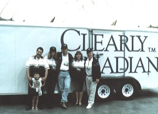 Aiaborne Racing Team(エアボーンレーシングチーム)の仲間と 左端がチームオーナーのムレー。右端は父親のVE7XQ・Tony 日本で自動車のビッグレースといえば、毎年鈴鹿で行われるF1（フォーミュラーワン）が知られていますが、 カナダや米国では、このCARTが盛んなのです。 1998年から、この本場のCARTが栃木県・もてぎサーキットで行われることが決まりましたので、日本でもF1同様、 注目されることでしょう。 CARTに参戦している日本人ドライバーは、ヒロ松下だけですが、CARTのサポートレースの、 INDY-RIGHT（インディライツ）には、今季（1997年）から日本の野田秀樹、服部尚貴、服部茂章の３人が参戦、 活躍しています。[JA1RJU/VE7RJU 小笠原 一夫]
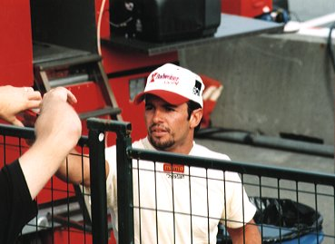 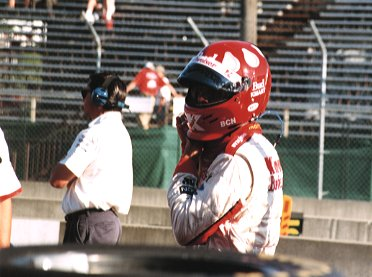 Christian Fittipaldi 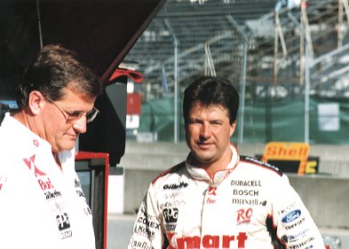 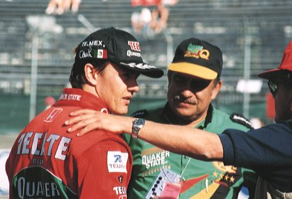 Michael Andretti / Adrian Fernandes 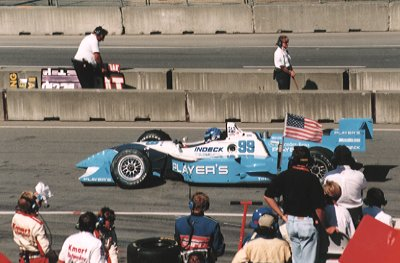 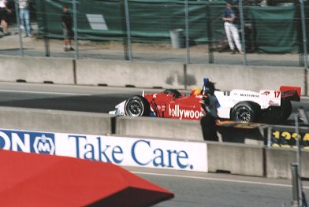 Greg Moore（左） / 1997 Vancouver GPの優勝者・Mauricio Gugelmin 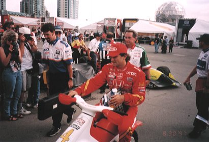 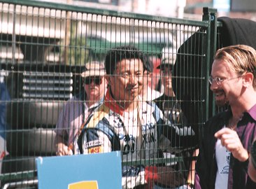 1997 CART総合優勝のAlex Zanardi / 唯一の日本人ドライバー、ヒロ・松下
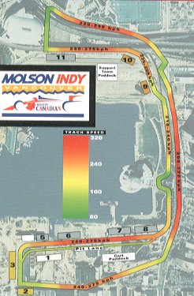 ○来季（1998年）からバンクバーGPのコースが変更になります 【番外！】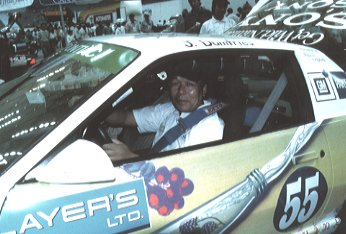
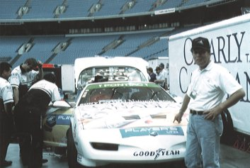 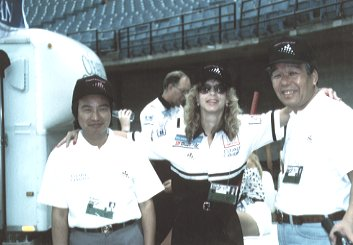 Aiaborne Racing Team(エアボーンレーシングチーム)の仲間と
|